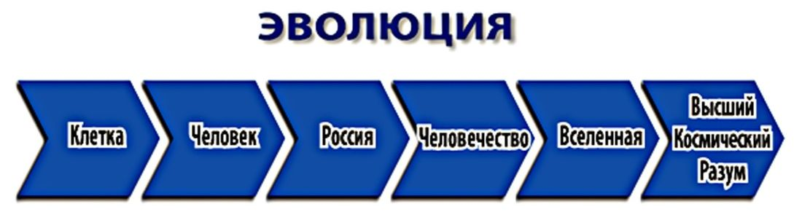

Есть - Сфера энергии Бога!
Ниже - энергия человечества!
Показано, что эти дороги,
Пересекаются в бесконечности!
Это говорят науки данные!
Определяя Момент бифуркации,
Главное, чтоб было желание,
Поднять энергии концентрацию!
Любые научные представления в физике или медицине должны опираться на основы структуры Мироздания, определяя место и смысл существования (здоровья) человека в ноосфере (по В.И. Вернадскому). В основе вещей лежит волновая природа материи, называемая в современной жизни корпускулярно-волновым дуализмом. Мы считаем, что объективный анализ свода системных Канонов Вселенной, определяющих структуру материи на всех уровнях энергии и масштаба, позволит обеспечить максимальную энергетическую целесообразность предлагаемых обществу концепций, как будущности человечества, так и смысла, а значит, здоровья или долголетия человека, которые должны соответствовать структуре Мироздания!
Прежде всего, мы считаем, что в любой системе взглядов, даже в такой общественной системе, как государство, должны создаваться условия Нейтральности энергетического поля, баланс, равновесие сил, энергий. Пик Нейтральности достигается периодически как результат эволюции и сопровождается высвобождением энергии.
Элементы целого
Система состоит из разнообразия элементов, а точнее, из людей, которые в сумме должны дополнять и уравновешивать друг друга. Сюда также входит взаимное дополнение и уравновешивание элементов с противоположными характеристиками, как частный случай.
Комплементарность подразумевает ещё и математическую полноту (разнообразия или множественности) набора элементов, как способность, комбинируя их, реализовать любую нужную функцию.
Нужно понимать, что все элементы (люди) Целого являются его подобием, подчиняются тем же Канонам, и сами состоят из своих подобий, которые подчиняются этим же Канонам и т.д. При объединении систем в кластер (фрактал), повышается многообразие, и, следовательно, повышаются возможности и качество достижения Комплементарности и Нейтральности на всех уровнях системы, с высвобождением энергии.
Устойчивое равновесие
Современное здравохранение, как и физика, должно опираться на ряд основополагающих законов, таких как Закон сохранения энергии и вещества, Принцип наименьшего действия (Вариационный принцип), стремление к устойчивому равновесию. Эти принципы активно используются в физических расчётах и моделях. Известно, что Природа, как и человек, стремится к равновесию, как к наиболее энергетически выгодному состоянию. Равновесием называется такое состояние объекта (человека), когда векторная сумма всех сил, и всех моментов сил, действующих на него, равна нулю. Равновесие называется устойчивым, если при любых малых отклонениях, допускаемых внешними информациями, в системе возникают силы, возвращающие объект в исходное положение. Стремление частиц к устойчивому равновесию хорошо демонстрируют многие разделы науки, включая атомную физику. Например, известно: электронные оболочки принимают наиболее энергетически выгодное состояние, а атомы соединяются в молекулы, стремясь к дополнению своих внешних электронных оболочек до октета.
Согласно теории, Вселенная является энергетической системой, в основе эволюции и функционирования которой лежит энерго-информационный обмен. Этот обмен происходит как внутри системы, так и между подсистемами, и всеми структурными уровнями и подуровнями.
Совершенная система
Канон Нейтральности говорит о том, что состояние Нейтральности (равновесие) сил, энергий в Системе (и, естественно, в человеке как в подсистеме) достигается при условии открытого обмена (информации) её элементов и является вершиной (высшей точкой) Её совершенствования, а значит, условием его стабильного существования.
Известно, что в момент достижения Нейтральности (равновесия) Вселенной происходит высвобождение (диссипация) энергии, которая затем, насыщенная информацией, отдаётся (возвращается) Системе (Вселенной).
Если этот процесс является частью Общего, лучше сказать, ЕДИНОГО энергоинформационного обмена (взаимодействия) во Вселенной, тогда и происхождение человека, как великого фрактального подобия Вселенной, связано с выбросом (диссипацией) энергии и с последующей её материализацией, а затем возвращением этой энергии, уже насыщенной информацией, а точнее, Мудростью во Вселенную!

Диссипация энергии Вселенной и возврат её, наполненной информацией, и есть Канон причины-следствия, подтверждающий целесообразность проявления и ухода человека как частицы Вселенной, производящей перенос и наполнение энергией собственного совершенства энергии Высшего Разума.
Принимаем, что подсистемой, как части Единого энерго-информационного пространства (Вселенной) в данном случае мы рассматриваем самого человека.
Здоровые расчёты
Достижение Нейтральности (точки бифуркации) повторяется периодически. Каждый раз при этом Система переходит к энергетически более Целесообразной и эффективной конфигурации. Исходя из волновой природы материи, подсистему (человека) можно представить как квантово-механическую систему элементов (клеток), имеющую целую последовательность резонансных гармоник (собственных уровней энергии) E0,E1,E2,..., и соответствующих им собственных функций, являющихся решениями стационарного уравнения Шрёдингера для данной конкретной системы, которое имеет вид (1), где оператор Гамильтона в общем виде, (2) где mk - масса частицы, где h постоянная Планка, - оператор Лапласа по координатам k-й частицы, - потенциальная энергия группы из N частиц, движущихся в силовом поле,
- искомая волновая функция.
Тогда диссипация нужной порции энергии (жизнь человека) способна (с высокой степенью вероятности) переводить Систему (Вселенную) на более высокочастотные (высокоэнергетические) состояния (гармоники), ибо энергия прямопропорциональна частоте. Синтез более сложных структур, и даже проявление самого человека можно рассматривать как проявление более высокочастотных резонансных гармоник Системы в результате диссипативного процесса, как естественного процесса при эволюции, и как необходимый энергообмен в Системе, обеспечивающий её равновесие и устойчивость.
Собственные волновые функции удовлетворяющие уравнению (1), образуют полную (Комплементарную) систему функций, т.е. любое состояние как данной системы можно представить линейную комбинацию этих функций с некоторыми коэффициентами c0,c1,c2,..., в виде, (3) что подтверждает Канон Комплементарности, как фундаментальное свойство Мироздания, в котором все энергии E0,E1,E2,..., (люди, Природа) взаимодополняют и уравновешивают друг друга.
Процесс развития
Диссипация энергии наблюдается и при совершенствовании технических Систем, в виде высвобождения избытков энергии, что отмечено профессором Г. С. Альтшуллером: «Любой технический объект, в процессе развития, стремится к идеальному объекту. Технический объект идеален, если его нет, а функция выполняется».
Мы считаем, что идеальной формой Общества как системы человеческих отношений и идеальным состоянием самого человека, а точнее его здоровьем, должно быть стремление к достижению состояния ИДЕАЛЬНОГО ОБЪЕКТА, который существует, не вмешиваясь в работу системы, обеспечивая, тем не менее, её бесперебойный процесс.
По словам Г. С. Альтшуллера,
«закон увеличения идеальности системы (человека) универсален, хотя далеко не всегда этот идеальный вариант оказывается полностью осуществимым. Иногда приходится несколько отступить от идеала. Важно, однако, другое: представление об идеальном варианте, вырабатываемое по чётким правилам, и сознательные мыслительные операции «по внутренним законам» дают то, для чего раньше требовались мучительно долгий перебор вариантов, счастливая случайность, догадки и озарения».
Научный анализ показывает, что увеличение степени идеальности технических и биологических систем, так же как и Общественных взаимоотношений, есть всеобщая закономерность, подчиняющаяся Канонам Мироздания!
Правила обмена
Как уже было отмечено, в основе функционирования и эволюции любой подсистемы Вселенной лежит энерго-информационный обмен. Согласно Канону Энергообмена, в экономике, как и в здравоохранении, должен соблюдаться баланс двухстороннего энергообмена между элементами системы, и этот энергообмен по всем уровням структуры должен быть беспрепятственным.
Указывается, что необходимыми условиями принципиальной жизнеспособности технической, особенно биологической, системы являются:
- наличие, а значит, желание, мотивация или целеполагание участия в Едином эволюционном процессе Вселенной;
- энергообмен (сквозной проход энергии через систему);
- согласование или гармонизация собственных колебаний (или периодичности действий) с вибрациями Целого.
Правило (1) говорит о необходимости участия человека, а значит, о необходимости его собственного совершенствования в соответствии с Канонами Мироздания!
Ведь основной частью общества является сам человек, и если начинать разговор о здравоохранении, а точнее, о здоровье человека, то без его мотивации и желания быть не только здоровым, но продолжать совершенствоваться постоянно в процессе всей своей жизни, обеспечивая тем самым постоянный энергобмен со Вселенной по принципу «Совершенство в ответ на Совершенство», добиваться нейтральности, а значит, состояния внутреннего равновесия и, как следствие, долгожительства - невозможно!
Поэтому правило (2) и указывает на необходимость энергообмена между человеком как части Целого или Вселенной с самой Вселенной, на условиях справедливого (пропорционально вложенной информации или энергии) энергообмена, поскольку человек со своей внутренней Вселенной является частью Великой эволюционный цепи, а это значит, что достижение пропорциональности вложенной энергии относится и к человеку.
Правило (3) говорит о необходимости общих, Единых, правил взаимодействия в Вечности. В основе согласованного взаимодействия и взаимопонимания должны лежать не только порядок, баланс и Ритм энергоинформационного обмена, но и общность целей, ценностей, нравственных ориентиров, общая система знаний об окружающем Мире и о месте человека в Мироздании, основанная на фундаментальных научных знаниях, проверенных временем культурно-нравственных традициях народов. Человек, каким бы он не был, не может существовать без Единого для всего народа целеполагания.
Кроме того, правило (3) говорит о необходимости учёта Канонов Мироздания при взаимодействии с окружающим миром (Природой), в том числе и с Биосферой.
Эту проблему отмечал ещё В.И. Вернадский. Особое внимание в своих трудах учёный уделял возрастающему влиянию человека на ход эволюции биосферы. В. Вернадский подчёркивал, что человек разумный - невиданная по своим масштабам геохимическая сила, которая увеличивает своё влияние на Природу и самого человека и его здоровье, по мере развития научной мысли. В связи с этим возрастает ответственность человека за его влияние на Биосферу, поскольку игнорирование канонов Мироздания может привести и уже приводит человечество к самоуничтожению. Современная фундаментальная наука играет определяющую роль в изучении законов Природы (Биосферы), и Космоса, а значит и в сохранении человечества, если она не отрывает человека от Вселенной как Единого Целого Мироздания.
Канон Поля
Остановимся подробнее на Каноне Поля. Известно, что внутренняя энергия молекул складывается из энергии электронных оболочек, энергии колебания валентных связей и энергии вращения. При этом каждый из этих компонентов имеет свою бесконечную последовательность собственных (резонансных) состояний (частот), расходящуюся (для вращательного движения) с ростом номера или сходящуюся к пределу диссоциации (т.е. энергии, при которой объект распадается). Переходы между уровнями энергии происходят поглощением (излучением) кванта энергии (частоты) равной разности уровней.
Эти последовательности частот (уровней энергии, т.к. энергия пропорциональна частоте) имеют черты фрактальности, т. е. подобия и вложенности. Подобие порядка особенно ярко проявляется для электронных и колебательных состояний. Вид этих диаграмм согласуется с вышеуказанным Каноном Поля и с указанным в нём распределением уровней, близким к логнормальному закону (4)
при параметре и более, с характерным сгущением уровней в центре, т.е. в зоне высоких частот (энергий).
Согласно данным, чем выше частота, а значит и уровень энергии, тем ниже плотность материи. Различие плотности материи согласуется с корпускулярно-волновым дуализмом, т.е. с наличием волновых свойств у всех объектов Системы и подсистем, или человека самого и его внутренней Вселенной.
По законам квантовой механики, эфир (в котором распространяется электромагнитная волна) как колебательная система имеет набор собственных (резонансных) частот (уровней энергии). Дискретность энергетического спектра эфира подтверждается постоянством скорости света, для уровня энергии на котором мы находимся.
Система функций
Рассматривая описание волновой природы материи, следует добавить, что каждому из уровней энергии колебательной системы соответствует своя волновая функция, описывающая соответствующие периодическое движение. Собственные частоты (энергии) и соответствующее собственные функции являются решениями стационарного уравнения Шрёдингера (1), для данной системы. Все собственные функции каждого фрактала образуют полную (т.е. комплементарную) систему функций, по которым можно разложить все остальные возможные состояния (функции) системы. И такой комплементарный набор собственных частот и функций имеют все объекты, так как все они есть многоуровневые и многомерные фрактальные колебательные системы. А это значит, что энерго-информационный обмен между объектами зависит от когерентности и резонанса их собственных частот и Общих Ритмов.
Примером взаимопроникающей «многослойности» является человек. Верхним энергетическим уровнем здесь является разум, мышление (Подсознание и Сознание) человека как совершенная по гибкости, подвижности и управляемости, энерго-информационная система. Остальные слои обеспечивают управление организмом. Верхним уровнем здесь является внутреннее математическое обеспечение, позволяющее интерполировать траекторию, рассчитывать передвижение человека в Пространстве, но, самое главное, определять или корректировать его здоровье, а значит, и эффективность и целесообразность его долголетия, как подсистемы обеспечивающей совершенствование Целого!
Единый энергообмен
Здесь целесообразно вспомнить выражение великого врача Н.И. Пирогова, который утверждал, что «лечение - есть поражение медицины, настоящая медицина - сплошная профилактика», ибо если человек как неотъемлемая часть Вселенной нарушает Единый энергообмен Системы (Целого) со всеми подсистемами, то никакое лечение не поможет этому человеку закончить свою жизнь раньше отпущенного срока.
При всём глубоком уважении к традиционной или классической медицине следует сказать, что «спасение утопающего есть дело рук самого утопающего», а значит медицина, в соответствии со словами профессора Н.И. Пирогова должна заниматься профилактикой, обеспечивая эффективное самолечение или гармонизацию человека (подсистемы) со Вселенной (системой), и другой рекомендации быть не может.
Всё, что мы имеем сегодня в здравоохранении, а точнее, в классической медицине, можно называть «ремонтом или латанием дыр» в биологической системе (в человеке), без учёта смысла и целесообразности его пребывания в Едином природном энергобмене Системы с её подсистемами!
Поэтому, пока человек не изменит своего отношения к самому себе как к неотъемлемой части Вселенной, в которой ему отведена великая роль формирования внутреннего совершенства, и к энергообмену по принципу «совершенство на совершенство», человек обречён болеть, ибо болезнь является первым признаком внутреннего несовершенства, а значит, нарушением процесса энергообмена между ним и Вселенной, и уходить из жизни раньше отмеренного Вселенной срока, равного 120 лет.
Маслов Л.И., доктор технических наук, профессор, академик РАЕН,
Директор Холдинга «НИИ Здоровьесберегающих технологий,
Щербаков А.П., кандидат физико-математических наук,
Институт оптики атмосферы, СО РАН